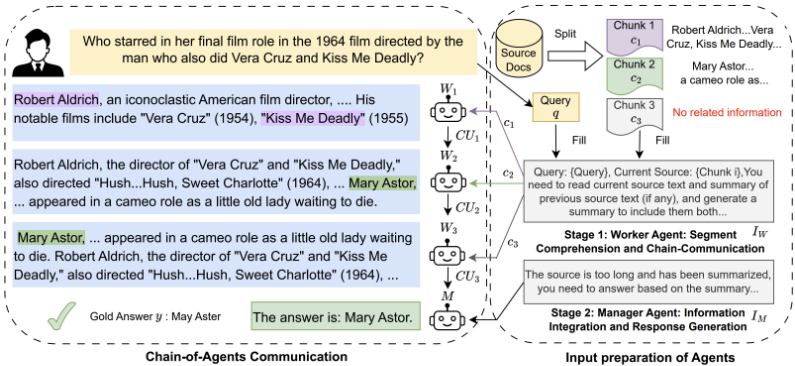
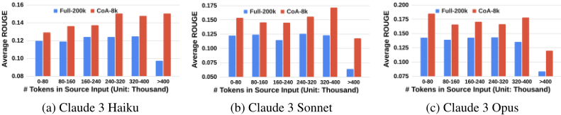
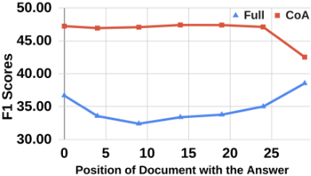
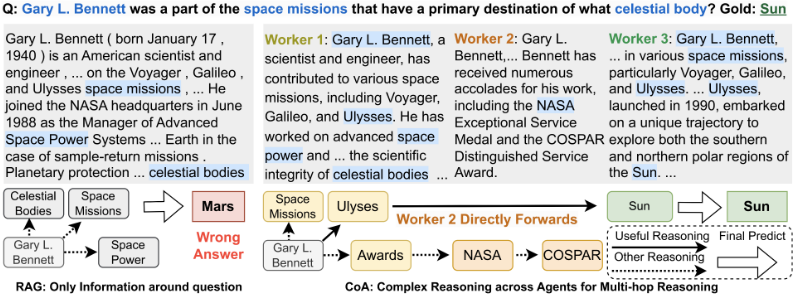
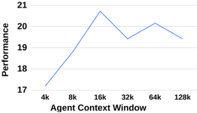

Chain of Agents：LLM 在长上下文任务上的协作
论文针对 LLM 处理长上下文时两条主流路线的缺陷：RAG 等输入缩减方法无法保证覆盖所需信息，窗口扩展则受 'lost in the middle' 困扰、难以聚焦关键内容。论文提出 Chain-of-Agents（CoA）框架：将长文本切分为 chunk，由一串 worker Agent 顺序接力，每个 worker 读取一个 chunk 与上一个 worker 传来的 communication unit，边读边聚合证据后传给下一个；最后由 manager Agent 汇总生成最终答案，全程免训练、任务无关、可解释，编码时间复杂度从 n² 降到 nk。在 9 个长上下文数据集（QA、摘要、代码补全）与 6 个 LLM 上，CoA 全面超过 RAG、Full-Context 及其他多 Agent 基线，最高提升达 10%；仅用 8k 窗口的 CoA 显著超过 200k 窗口的 Claude 3，且输入越长收益越大。分析还表明 CoA 能缓解 lost-in-the-middle，顺序链式通信优于并行分层/投票等多 Agent 结构。
LLM 难以有效处理长上下文任务。既有两条路线各有缺陷：输入缩减（截断、RAG）因检索精度不足可能给下游 LLM 不完整的上下文，无法保证覆盖所需信息；窗口扩展虽能读入更长输入，但模型难以聚焦与任务相关的信息，存在 'lost in the middle' 等上下文利用失效问题。论文寻求一种免训练、能覆盖全部输入（full receptive field）且保持聚焦能力的长上下文处理方法。
提出 Chain-of-Agents（CoA）两阶段框架。Stage 1：将长文本 x 切分为每个都小于窗口 k 的 chunk，由 l 个 worker Agent 顺序接力处理；每个 worker 输入当前 chunk、任务指令 I_W、查询 q 与上一个 worker 传来的 communication unit（CU），处理后把更新后的信息作为 CU 传给下一个 worker，从而通过多步通信把有效上下文扩展到完整 receptive field；CU 按任务定制（QA 为证据、摘要为前文摘要、代码补全为含函数/类名与说明的代码摘要）。Stage 2：由独立的 manager Agent 基于最后一个 CU 与指令 I_M 生成最终答案，实现'分块分析'与'最终作答'的职责解耦。框架 training free、task agnostic、高度可解释，并将编码时间复杂度从 Full-Context 的 n² 降为 nk；另探索了多路径（不同阅读顺序）+ 投票/LLM 裁判的增强方式。
在 9 个长上下文数据集、6 个 LLM 上，CoA 在全部数据集上显著超过 RAG 与 Full-Context（Vanilla）基线，提升最高达 10%
CoA (8k) 相比 Vanilla (8k)：text-bison 在 NarrativeQA 提升 13.30%，text-unicorn 在 MuSiQue 提升 12.82%，gemini-ultra 在 Quality 提升 22.00%
CoA (8k) 显著超过 200k 窗口的 Claude 3 Vanilla (200k)；且随模型从 Haiku 到 Opus 增强，对 Vanilla (200k)/RAG (8k) 的提升变大（NarrativeQA 为 11.63/11.36/17.4，BookSum 为 1.66/2.86/3.47）
BookSum 上当输入长度超过 400k 时，CoA 相对 Vanilla (200k) 的提升接近 100%
lost-in-the-middle 复现实验：Vanilla 性能波动范围为 6.13 (±2.17)，CoA 收窄为 4.89 (±1.91)
CoA 在全部 8 个数据集上超过并行多 Agent 基线 Hierarchical 与 Merge
消融实验：去掉 manager（用最后一个 worker 直接生成）在 MuSiQue 上性能下降超过 10%；left-to-right 阅读顺序在多数数据集上最优
多路径增强（Bi-direction、Self-consistency、Permutation 配合投票或 LLM 裁判）均能进一步提升性能，其中 5-way Permutation 提升最大；oracle 上界显示路径选择仍有较大改进空间
理论分析：CoA 编码时间复杂度为 nk，低于 Full-Context 的 n²（长上下文场景 k≪n）
与输入缩减（RAG/截断）和窗口扩展两条既有路线不同，CoA 不缩短输入也不扩展窗口，而是用多 Agent 顺序通信实现完整 receptive field 的'边读边处理'（interleaved read-process），并以短上下文缓解聚焦问题。与已有多 Agent 工作（短文本辩论、树结构单跳 QA）不同，CoA 面向长上下文任务，支持跨 Agent 的多跳推理（兄弟节点无通信的树结构无法完成）。实验进一步证明顺序链式通信优于并行的 Hierarchical/Merge 结构，且框架免训练、任务与长度无关、可解释、更省时。
相关度级别：high
命中能力域：3.1 上下文工程与记忆 | 3.4 多智能体协作
理由：直接命中 3.1：论文系统对比了 RAG 与长窗口两条长上下文路线的缺陷，提出用分块 + 顺序信息聚合（communication unit 链式传递）组织上下文的替代方案，并实证其能缓解 lost-in-the-middle、在 RAG 检索失败和超长输入场景下优势更大，这正是团队做知识库问答、长文档处理时的上下文工程核心议题。同时直接命中 3.4：worker 顺序链 + manager 汇总是一种具体的多 Agent 编排与任务分解模式，论文用实验回答了'顺序链 vs 并行分层 vs 投票合并'的架构选型问题，并给出 worker/manager 职责分离、CU 内容按任务定制等可复用的设计经验，对团队设计多 Agent 流水线有直接参考价值。
建议动作：深入精读并做内部分享
arXiv:2406.02818v1 [cs.CL] 2024年6月4日
智能体链（Chain of Agents）：大语言模型协作完成长上下文任务
Yusen Zhang ♣∗, Ruoxi Sun ♢, Yanfei Chen ♢, Tomas Pfister ♢, Rui Zhang ♣†, Sercan Ö. Arik ♢†
♣ 宾夕法尼亚州立大学，♢ Google Cloud AI Research
{yfz5488, rmz5227}@psu.edu, {ruoxis, yanfeichen, tpfister, soarik}@google.com
有效处理长上下文的挑战已成为大语言模型（LLM）面临的关键问题。目前出现了两种常见策略：1）缩短输入长度，例如通过检索增强生成（RAG）检索相关文本块；2）扩展 LLM 的上下文窗口上限。然而，这两种策略都存在缺陷：输入缩减无法保证覆盖包含所需信息的部分，而窗口扩展则难以聚焦于解决任务所需的相关信息。为缓解这些局限，我们提出了智能体链（Chain-of-Agents, CoA），这是一种新颖的框架，通过自然语言实现多智能体协作，使各种 LLM 能够在长上下文任务中进行信息聚合与上下文推理。CoA 由多个 worker Agent 组成，它们按顺序通信以处理文本的不同分段部分，随后由一个 manager Agent 将这些贡献综合为连贯的最终输出。CoA 通过交替进行阅读与推理来处理整个输入，并通过为每个 Agent 分配较短的上下文来缓解长上下文聚焦问题。我们在问答、摘要和代码补全等多种长上下文任务上对 CoA 进行了全面评估，结果表明其相比 RAG、Full-Context 以及多智能体 LLM 等强基线取得了高达 10% 的显著提升。
尽管大语言模型（LLM）在广泛的应用场景中表现出色，但在涉及长上下文的任务上仍难以胜任 [8, 57, 52]。许多应用场景需要极长的上下文，例如问答 [78, 20, 63]、文档与对话摘要 [23, 84, 83, 82, 12] 以及代码补全 [18, 39]，这些任务的输入包含整本书籍 [29, 30] 和长篇文章 [14]。
为应对长上下文任务的挑战，如表 1 所示，目前已有两个主要研究方向被探索：输入缩减（input reduction）和窗口扩展（window extension）。输入缩减在将输入送入下游 LLM 之前缩短输入上下文的长度。截断方法 [1, 61] 直接对输入进行截断。检索增强生成（RAG）[74] 通过基于嵌入相似度检索最相关的文本块，对这一方向进行了扩展。然而，由于检索准确率较低，LLM 可能获得不完整的上下文来完成任务，从而损害性能。窗口扩展通过微调来扩展 LLM 的上下文窗口，使其能够处理整个输入 [13, 40, 43]。例如，Claude-3 [5] 直接允许每次输入读取 200k 个 token。然而，当窗口变长时，LLM 难以聚焦于解决任务所需的信息，遭受诸如"lost in the middle"（迷失在中间）问题等上下文利用低效问题的困扰 [33, 3, 38]。
∗ 该工作完成于作者在 Google Cloud AI Research 担任学生研究员期间。
† 末位作者
预印本。审稿中。

| Category | Example Work | Rec. | Foc. | No Train | Read | Agent | Applicability | Inter. |
|---|---|---|---|---|---|---|---|---|
| Input Reduction | Truncation [45] RAG [74] | ✗ ✗ | ✓ ✓ | ✓ ✗ | k n + k | Single Single | Generic Query-based | Low Medium |
| Window Extension | Position Interpolation [13] Long Context [5] | ✓ ✓ | ✗ ✗ | ✗ ✗ | n n | Single Single | Generic Generic | Low Low |
| Multi-agent LLMs | Chain-of-Agents (Ours) | ✓ | ✓ | ✓ | n | Multiple | Generic | High |
| Category | Example Work | Rec. | Foc. | No Train | Read | Agent | Applicability | Inter. |
受上述挑战的启发，我们借鉴人类处理长上下文任务的方式，提出了一种新颖的框架——智能体链（Chain-of-Agents, CoA）。CoA 的核心思想是利用多智能体通信，使不同的 LLM 之间具备信息聚合与上下文推理能力。如图 1 所示，CoA 包含两个阶段。在阶段 1 中，一系列负责长上下文不同分块的 worker agent 相互协作，聚合证据以回答给定的查询。为此，各 worker 依次读取并处理文本，每个 worker 接收来自前一个 worker 的消息，并将有用的更新信息传递给下一个 worker。在阶段 2 中，manager agent 接收来自最后一个 worker agent 的完整证据，并生成最终响应。
如表 1 所示，CoA 是一个无需训练、任务无关且高度可解释的框架，它通过交替进行阅读与处理来覆盖整个“感受野”，并通过为每个 Agent 分配较短的上下文来缓解长上下文聚焦问题。与输入缩减（input reduction）不同——在输入缩减中，LLM 需要在被缩减的输入上以较低的感受野开始处理（“先读后处理”）——CoA 中的 worker 在读完全部输入之前就开始处理每个分块（“交替读-处理”），从而解决了输入缩减难以应对的问题，例如通用摘要或段落计数 [6]。与上下文扩展（context extension）不同，CoA 利用的是通信能力，而不是试图向一个 LLM 塞入大量 token。对于复杂任务而言，这是一种更自然的解决方案，因为我们认为每个 LLM 都有其极限，而复杂的上下文任务总会超出其极限。与 Full-Context 相比，CoA 在成本上也更为高效，其将时间复杂度从 n² 降至 nk，其中 n 为输入 token 数，k 为 LLM 的上下文极限。
我们在九个数据集上开展了大量实验，涵盖问答、摘要和代码补全任务，使用了六个 LLM，其中包括 PaLM 2 [4]、Gemini [61] 和 Claude 3 [5] 等模型。我们将 CoA 与分别取自输入缩减和窗口扩展两类方法的两个强基线进行比较：(i) RAG，它使用最先进的检索器获取最相关的信息并馈入 LLM；(ii) Full-Context（Vanilla），它将全部输入馈入 LLM，直至达到窗口上限。我们的结果表明，在全部九个数据集上，CoA 相比所有基线均取得了高达 10% 的显著提升。鉴于针对长上下文任务的多智能体研究尚不充分，我们精心构建了两个多智能体基线，包括一种层级结构和一种结果合并方法，以进一步证明 CoA 在其他可能的多智能体框架中表现更为优越。
2
多智能体 LLM。多智能体 LLM 已成为一个热门话题 [19]。其中大部分工作聚焦于社会模拟。“生成式智能体”（Generative agents）是一个允许 25 个 Agent 相互交流的沙盒环境 [47]，而“社会拟像”（Social simulacra）则将其扩展至 1000 个 Agent [48]。基于这些工作的成功，一些研究探索了游戏场景 [35, 68, 75, 76, 42]、世界大战 [21]、经济市场 [32, 70]、推荐系统 [81] 以及疫情 [17]。另一些工作则推进问题求解，通过多智能体辩论 [16, 73, 10, 60] 和讨论 [11, 53] 聚焦于短文本推理，涵盖推理 [16, 60]、力学问题 [44]、论文评审 [77]、知识图谱构建 [79] 以及代码智能 [64, 22] 等不同任务。与上述工作不同，我们改进长上下文任务上的问题求解。据我们所知，最接近的工作利用树结构在长上下文上进行单跳问答（QA）[9]。然而，它并非为多跳推理或其他任务而设计，且兄弟 Agent 之间没有通信。
LLM 的长上下文建模。输入缩减：检索增强生成（RAG）被广泛用于解决长上下文基于查询的任务 [74, 2]。结合强大的检索器 [72, 37, 67]，LLM 有望处理开放领域中的长上下文问题。已有研究在预训练 [24, 66]、微调 [31]、推理 [80] 或直接集成 [26, 55] 阶段对 LLM 进行增强。此外，一些 token 级检索方法也被提出 [34]。Longllmlingua [25] 从长提示中移除 token，将长上下文提示压缩至目标预算。窗口扩展：得益于 GPU 的发展，LLM 的上下文窗口变得越来越长。例如，上下文窗口从 1024（GPT-2 [51]）、2048（GPT-3 [7]）增加到 128k（GPT-4 [45]）。此外，最新版本的 Claude-3 [5] 支持 200k 的上下文窗口。为节省 LLM 训练成本，一些持续学习或微调方法被提出，用于扩展预训练 LLM 的上下文窗口 [41, 50, 40, 43]。例如，位置插值 [13] 修改旋转位置编码 [58]，将 LLaMA [62] 的上下文长度扩展至 32k。与上述工作不同，CoA 既不缩减输入长度，也不扩展 LLM 的窗口长度，而是利用多智能体协作与通信来获得完整的感受野。
复杂任务推理。以往关于复杂推理的研究主要集中于将复杂问题分解为子问题，从而逐步求解。[49] 使用无监督模型对问题进行分解，再用另一个模型分别回答这些问题。Decomposed Prompting [27] 利用若干预定义模块对每个分解出的子问题进行分类，并在需要时进一步分解。此外，分解方法还被用于人机交互 [71] 以及提示器训练 [65]。最近，针对大语言模型（LLM）提出了许多工作，例如思维链（Chain-of-thought, CoT）[69]、Least-to-most prompting [85] 以及 Pearl [59]。然而，这些方法的提示长度均不超过单个 Agent 的上下文限制。相比之下，我们提出的 Chain of Agents 框架旨在跨多个 Agent 进行有效推理，以支持无限长度的源文本。
图 1 展示了我们的 Chain-of-Agents（CoA）框架的总体概览，该框架包含两个阶段。在阶段 1 中，长上下文被切分为多个分块（chunk），每个分块都可以由一个 worker agent 处理。随后，各 worker agent 按顺序进行通信，以在整个上下文上生成证据。在阶段 2 中，一个 manager agent 利用来自 worker 链的知识来生成最终答案。
为了对任务进行形式化描述，我们将一个长上下文样本表示为 ( x, y, q )，其中 x 是由 n 个 token 组成的输入，y 是由 m 个 token 组成的输出，q 是一个可选的查询。给定一个上下文窗口限制为 k 个 token（通常 k ≪ n）的 LLM，目标是在有限的输入上下文窗口内生成 y。因此，我们将每篇源文本 x 切分为多个分块 x = { c 1 , c 2 ...c l }，使得每个分块都能完整地输入到 LLM agent 骨干模型中。
3
在阶段 1（Stage 1）中，CoA 包含由 l 个 worker agent 组成的序列。每个 worker W i 的输入是以下内容的拼接：来自源文本 x 的分块 c i、查询 q、针对 worker agent 特定任务的指令 I W，以及由前一个 agent 传递的消息，该消息记为“通信单元”（communication unit）CU i - 1。worker agent 对其进行处理后，输出传递给下一个 worker 的消息 CU i，表示为：
worker agent 生成的 CU 因任务不同而各异。对于问答任务，CU 包含供 manager 回答问题所需的证据。对于摘要任务，CU 包含对前文的摘要。对于代码补全任务，CU 包含带有函数/类名称及解释的代码摘要。在多种任务上的有效性证明了 CoA 的灵活性（附录 C）。
CoA 中多步骤的 worker 通信将模型上下文扩展至完整的感受野（receptive field），这意味着无论输入有多长，最后一个 worker 都能读取完整的输入。因此，通过调整 worker agent 的数量，CoA 可以扩展应用于不同长度的输入。
图 1 的左侧强调了 worker 之间协作通信的必要性，这对于有效解决复杂的长上下文推理任务至关重要。我们观察到：1）尽管仅凭 c 1 无法回答该问题，W 1 仍生成了对回答该问题有用的相关证据；2）借助前一个 worker 给出的部分答案，W 2 结合当前源文本进一步推理，完成跨 agent 的完整推理链，并生成可解释的推理链；3）W 3 在分块 3 中未找到相关信息，于是直接改写 CU 2，将正确答案作为 CU 3 的第一个 token，而不添加任何无关信息。这表明，如果各 worker 相互独立（例如树状结构通信），那么在第一跳（hop one）的答案由另一个 worker 持有的情况下，就不可能回答第二跳（hop two）。
在阶段 2 中，经过 worker agent 的多步信息提取与理解之后，manager agent 生成最终解答。worker agent 在长上下文源文本中提取相关信息，而 manager agent 则综合 'worker-agent-chain' 末尾所累积的相关信息，以生成最终答案。具体而言，给定 manager 的指令 I M 和查询 q，manager agent 接收来自最后一个 worker 的累积知识 CU l，并生成最终答案 Response：
使用单独的 LLM 作为 manager agent 的好处在于，可以将分析长上下文源文本中各分块的职责（'worker agents'）与生成最终答案的职责（'manager agent'）分解开来，从而使每个 agent 都能最大程度地履行其职责 3 。
我们在仅解码器（decoder-only）设置下，从理论上比较了全上下文输入与 Chain-of-Agents（CoA）的时间开销。我们假设大语言模型（LLM）生成的响应平均包含 r 个 token，输入包含 n 个 token，且 LLM 的上下文限制为 k。时间复杂度如表 2（附录 A）所示。可以看出，CoA 的编码时间低于 Full-
| Encode | Decode | |
|---|---|---|
| Full-Context | O ( n 2 ) | O ( nr ) |
| CoA | O ( nk ) | O ( nr ) |
| | Encode | Decode |
Context，这是因为在长上下文任务中 k ≪ n，而两者的解码时间相同。这证明了 CoA 相比 Full-Context 基线的高效性。
3 其他设计选择：我们的实验表明，让最后一个 worker W l 直接生成最终结果会导致性能下降。此外，将所有 CU i 或某些与答案相关的 CU（由 W i 决定）提供给 manager，也会因相互冲突的 CU i 所导致的混淆而损害性能。
算法 1 Chain of Agents（CoA）。输入：源输入 x，查询 q，agent 窗口大小 k，大语言模型 LLM（∗）。输出：查询的答案。将 x 划分为 l 个分块 {c 1 , c 2 , · · · , c l}，其中 c i 的长度小于 k；初始化 CU 0 ← 空字符串。for i in 1, 2, · · · , l do CU i ← LLM W i (I W , CU i-1 , c i , q) end for return LLM M (I M , CU l , q)
| Question Answering.HotpotQA | Question Answering.MuSiQue | Question Answering.NarrativeQA | Question Answering.Qasper | Question Answering.QuALITY | Summarization.QMSum | Summarization.GovReport | Summarization.BookSum | Code.RepoBench-P | |
|---|---|---|---|---|---|---|---|---|---|
| Avg. Input | 10603 | 12975 | 71787 | 4236 | 4936 | 12524 | 9239 | 108478 | 7105 |
| Avg. Agents | 2.35 | 2.88 | 12.45 | 1.12 | 1.31 | 2.57 | 2.03 | 18.63 | 1.69 |
| Query-based | ✓ | ✓ | ✓ | ✓ | ✓ | ✓ | ✗ | ✗ | ✓ |
| | Question Answering.HotpotQA | Question Answering.MuSiQue | Question Answering.NarrativeQA | Question Answering.Qasper | Question Answering.QuALITY | Summarization.QMSum | Summarization.GovReport | Summarization.BookSum | Code.RepoBench-P |
为了评估 CoA 与可能的多智能体（multi-agent）方法相比的性能，我们精心构建了两种多智能体方法。对于这两种方法，与 CoA 类似，我们也使用类似的指令将每个分块 c i 分配给 W i 以生成 CU i。在这些方法中，工作者智能体（worker agents）是并行且独立的，而 CoA 则是顺序执行的。
多智能体投票（Multi-Agent Voting，Merge）：每个智能体根据 c i 直接生成一个答案 a i，然后对所有答案 a i 应用多数投票来决定最终答案。
多智能体分层结构（Multi-Agent Hierarchical Structure，Hierarchical）：受 [9] 启发，我们提出了一种分层框架，其中工作者 W i 与管理者 M 之间的通信形成树状结构。对于每个工作者，它首先判断 c i 是否包含有用信息；如果是，则生成一个通信单元 CU i。随后，所有 CU i 被发送给管理者 M，由其得出最终答案。
此外，我们在每种方法名称的末尾附加一个整数 L，以明确标示 LLM 的窗口大小限制。例如，"CoA (8K)" 指 CoA 中使用的基础 LLM，其窗口大小为 8K。
| LLMs | Baselines | Question Answering.HotpotQA | Question Answering.MuSiQue | Question Answering.NarrativeQA | Question Answering.Qasper | Question Answering.QuALITY | Summarization.QMSum | Summarization.GovReport | Code.RepoBench-P |
|---|---|---|---|---|---|---|---|---|---|
| Vanilla (8k) | 45.57 | 26.87 | 11.96 | 26.56 | 61.86 | 15.45 | 20.6 | 56.3 | |
| text-bison | RAG (8k) | 51.91 | 33.83 | 14.2 | 27.2 | 55.28 | 15.59 | 20.83 | 55.63 |
| CoA (8k) | 53.62 | 37.09 | 25.26 | 37.17 | 65.42 | 16.77 | 26.11 | 58.25 | |
| text-unicorn | Vanilla (8k) | 51.09 | 29.67 | 14.45 | 27.81 | 83.4 | 16.61 | 23.5 | 53.87 |
| RAG (8k) | 58.01 | 40.38 | 19.12 | 24.44 | 83 | 16.83 | 21.43 | 50.49 | |
| CoA (8k) | 62.04 | 42.49 | 20.37 | 38.01 | 83.8 | 17.67 | 26.48 | 60.39 | |
| gemini-ultra | Vanilla (8k) | 40.62 | 23.61 | 7.71 | 20.59 | 57.4 | 12.1 | 26.18 | 49.09 |
| Vanilla (32k) | 45.09 | 27.93 | 7.21 | 21.71 | 58.6 | 10.24 | 26.96 | 73.04 | |
| RAG (8k) | 51.13 | 31.56 | 14.51 | 18.7 | 62.4 | 12.7 | 25.87 | 72.94 | |
| CoA (8k) | 54.26 | 35.09 | 25.26 | 35.1 | 80.6 | 12.84 | 26.98 | 73.05 |
| LLMs | Baselines | Question Answering.HotpotQA | Question Answering.MuSiQue | Question Answering.NarrativeQA | Question Answering.Qasper | Question Answering.QuALITY | Summarization.QMSum | Summarization.GovReport | Code.RepoBench-P |
Question Answering. Table 4 shows the results of Question Answering tasks on all three models. CoA (8k) outperforms Vanilla (8k) by a large margin on all 8 datasets , including 13.30% on NarrativeQA, 12.82% on MuSiQue, and 22.00% on Quality, for text-bison, text-unicorn, and geminiultra, respectively. Also, CoA (8k) outperforms RAG (8k) model for all 8 datasets using all three LLMs, demonstrating that CoA achieves higher performance than RAG. In other words, using multi-agent LLMs outperforms RAG models . It is also worth noting that for gemini-ultra, Vanilla (32k) improves the Vanilla (8k) baseline, yet it is still lower than CoA (8k).
Summarization and Code Completion. Table 4 shows the results of Summarization and Code Completion tasks. Similarly, CoA (8k) also outperforms all Vanilla (8k) and (32k) baselines on all three datasets, demonstrating the strong capability of CoA on various tasks. It is worth noting that for GovReport, RAG fails to improve the baseline with pseudo query. By contrast, CoA improves the performance significantly, showing that CoA can also be applied in non-query tasks .
Long Context LLMs. As Claude 3 models support 200k of tokens, we call these models long context models (LCM). Table 5 shows the performance of the LCM on two datasets. As can be seen, CoA (8k) outperforms Vanilla (200k) significantly, showing that with only an 8k context window, CoA can achieve a much higher performance than LCM with a 200k context window . Also, CoA improves the performance with the samples that can be fed into a 200k context window (no truncation). Moreover, the improvements over the Vanilla (200k) and RAG (8k) become higher when the model size increases from Haiku to Opus (11.63/11.36/17.4 for NarrativeQA, 1.66/2.86/3.47 for BookSum). This demonstrates that CoA benefits from stronger models to achieve higher improvements .
Other Multi-Agent Frameworks. As shown in Table 6, Hierarchical (8k) outperforms Vanilla (8k) on five out of eight datasets, demonstrating the hierarchical approach can also improve the vanilla baselines significantly. Merge (8k) is lower than Vanilla (8k) except for GovReport, showing that merging is especially effective for long summarization tasks such as GovReport. As can be seen, CoA outperforms Hierarchical and Merge on all eight datasets. The reason behind the results is because Hierarchical and Merge do not allow workers to communicate with each other due to their parallel designs. Thus, each worker can only maintain the information in its own chunk c i which blocks the understanding of the whole text, hurting the performance greatly.
6
| claude-3-haiku.No Trun. | claude-3-haiku.Trun. | claude-3-haiku.Average | claude-3-sonnet.No Trun. | claude-3-sonnet.Trun. | claude-3-sonnet.Average | claude-3-opus.No Trun. | claude-3-opus.Trun. | claude-3-opus.Average | |
|---|---|---|---|---|---|---|---|---|---|
| NarrativeQA | |||||||||
| Vanilla (200k) | 8 | 2.5 | 7.17 | 5.58 | 2.44 | 5.15 | 7.23 | 2.35 | 6.56 |
| RAG (8k) | 5.94 | 4.22 | 5.71 | 9.09 | 5.17 | 8.5 | 6.13 | 4.29 | 5.86 |
| CoA (8k) | 18.31 | 21.34 | 18.8 | 16.63 | 16.47 | 16.51 | 24.38 | 21.26 | 23.96 |
| BookSum | |||||||||
| Vanilla (200k) | 11.98 | 11.7 | 12.04 | 12.17 | 11.9 | 12.1 | 14.11 | 13.67 | 14 |
| CoA (8k) | 13.28 | 13.73 | 13.7 | 14.92 | 15.05 | 14.96 | 17.74 | 16.68 | 17.47 |
| | claude-3-haiku.No Trun. | claude-3-haiku.Trun. | claude-3-haiku.Average | claude-3-sonnet.No Trun. | claude-3-sonnet.Trun. | claude-3-sonnet.Average | claude-3-opus.No Trun. | claude-3-opus.Trun. | claude-3-opus.Average |
| HotpotQA | MuSiQue | NarrativeQA | Qasper | QuALITY | QMSum | GovReport | RepoBench-P | |
|---|---|---|---|---|---|---|---|---|
| Vanilla (8k) | 45.57 | 26.87 | 11.96 | 26.56 | 61.86 | 15.45 | 20.6 | 56.3 |
| Merge (8k) | 42.96 | 26.66 | 11.27 | 26.78 | 59.3 | 9.42 | 25.38 | 33.66 |
| Hierarchical (8k) | 50.62 | 29.4 | 17.04 | 31.39 | 64.2 | 15.19 | 16.54 | 27.96 |
| CoA (8k) | 53.62 | 37.09 | 25.26 | 37.17 | 65.42 | 16.77 | 26.11 | 58.25 |
| | HotpotQA | MuSiQue | NarrativeQA | Qasper | QuALITY | QMSum | GovReport | RepoBench-P |
为了证明这一点，我们首先根据 RAG 处理后的输入中包含标准答案（gold answer）的分块的位置（索引），将 NarrativeQA 数据集中的样本划分到不同的区间（bin）中。然后，我们计算不同区间上 CoA 与 RAG 结果的平均得分。图 3 展示了结果。如图所示，当索引较小时（即标准答案越靠近顶部），RAG 的表现更好，这表明下游 LLM 在很大程度上依赖于 RAG 重排序的质量。此外，当 RAG 成功检索到标准答案时，其性能与 CoA 的性能呈正相关。然而，当 RAG 检索失败时，CoA 能够大幅提升性能（远高于趋势线）。
我们在 BookSum 上比较了 CoA 与 Vanilla 在 Claude 3 上的性能。如图 2 所示，在各种源文本长度下，CoA 都能大幅超越 Vanilla 基线。值得注意的是，当样本长度增加时，CoA 的性能甚至还会提升，而相对于 Vanilla (200k) 基线的改进也变得更加显著。当长度超过 400k 时，CoA 的改进幅度达到约 100%。因此，我们可以得出结论：1) 即使模型本身已具有很长的上下文窗口限制，CoA 仍能提升 LLM 的性能；2) 当输入更长时，CoA 带来的性能提升更为显著。
To assess the 'lost-in-the-middle' [38] effect on Vanilla and CoA models, we replicated the original study by randomly selecting 500 samples from their dataset to create a QA dataset. The results are CoA (F1 Scores)

7
0.3
0.2
0.1
0.0
Fail (15%)
>8 (7%)
RAG (F1 Scores)


| HotpotQA | MuSiQue | NarrativeQA | Qasper | QuALITY | QMSum | RepoBench-P | |
|---|---|---|---|---|---|---|---|
| CoA | 53.62 | 37.09 | 25.26 | 37.17 | 65.42 | 16.77 | 58.25 |
| w/o Manager | 48.58 | 26.79 | 20.8 | 29.66 | 58.8 | 16.5 | 56.16 |
| Right-to-Left | 51.83 | 29.77 | 21.57 | 36.6 | 62.8 | 15.91 | 55.1 |
| Permutation | 56.05 | 34.55 | 23.6 | 37.42 | 64.6 | 16.5 | 58.43 |
| | HotpotQA | MuSiQue | NarrativeQA | Qasper | QuALITY | QMSum | RepoBench-P |
displayed in Figure 4. The Vanilla model exhibits a significant "lost-in-the-middle" issue, with a performance range of 6.13 ( ± 2 . 17 ). In contrast, CoA shows resilience against this issue, with a narrower performance gap of 4.89 ( ± 1 . 91 ), demonstrating that CoA effectively mitigates this problem by providing each agent a shorter context to focus on.
图 5 展示了 HotpotQA 上的一个预测样例。为了找到正确答案，检索增强生成（RAG）会检索与查询具有较高语义相似度的文本块。然而，进行多跳推理颇具挑战性，因为关键的第一跳答案往往与查询缺乏语义相关性。相比之下，智能体链（CoA）的运作方式有所不同：第一个 Agent 在不知道查询答案的情况下探索相关主题，为后续推理提供帮助。第二个 Agent 同样不知道答案，通过纳入新信息来拓宽主题范围。第三个 Agent 最终发现了答案，它综合前序 Agent 的信息与新数据，完成整个推理链。这种协作方式凸显了 CoA 在长上下文任务中促进复杂推理的能力。
4-6 (7%)
6-8 (3%)
2-4 (12%)
0-2 (56%)
8
| HotpotQA | MuSiQue | NarrativeQA | Qasper | QuALITY | QMSum | RepoBench-P | |
|---|---|---|---|---|---|---|---|
| Bi-direction: left-to-right and right-to-left paths (2-way) | Bi-direction: left-to-right and right-to-left paths (2-way) | Bi-direction: left-to-right and right-to-left paths (2-way) | Bi-direction: left-to-right and right-to-left paths (2-way) | Bi-direction: left-to-right and right-to-left paths (2-way) | Bi-direction: left-to-right and right-to-left paths (2-way) | Bi-direction: left-to-right and right-to-left paths (2-way) | Bi-direction: left-to-right and right-to-left paths (2-way) |
| w/ judge | 54.11 | 36.97 | 24.47 | 39.23 | 65.00 | 16.41 | 49.69 |
| w/ vote | 51.46 | 34.16 | 21.59 | 37.42 | 64.60 | 9.51 | 38.70 |
| oracle | 62.12 | 48.02 | 32.84 | 46.37 | 71.80 | 18.83 | 59.67 |
| Self-Consistency: five left-to-right reasoning paths (5-way) | Self-Consistency: five left-to-right reasoning paths (5-way) | Self-Consistency: five left-to-right reasoning paths (5-way) | Self-Consistency: five left-to-right reasoning paths (5-way) | Self-Consistency: five left-to-right reasoning paths (5-way) | Self-Consistency: five left-to-right reasoning paths (5-way) | Self-Consistency: five left-to-right reasoning paths (5-way) | Self-Consistency: five left-to-right reasoning paths (5-way) |
| w/ judge | 57.17 | 38.82 | 21.58 | 36.24 | 62.80 | 17.06 | 46.97 |
| w/ vote | 57.49 | 40.78 | 25.56 | 39.15 | 68.60 | 8.35 | 35.56 |
| oracle | 67.07 | 55.74 | 39.89 | 52.74 | 80.40 | 20.81 | 63.52 |
| Permutation: five random order reasoning paths (5-way) | Permutation: five random order reasoning paths (5-way) | Permutation: five random order reasoning paths (5-way) | Permutation: five random order reasoning paths (5-way) | Permutation: five random order reasoning paths (5-way) | Permutation: five random order reasoning paths (5-way) | Permutation: five random order reasoning paths (5-way) | Permutation: five random order reasoning paths (5-way) |
| w/ judge | 59.17 | 42.37 | 25.47 | 37.65 | 63.40 | 17.81 | 52.45 |
| w/ vote | 58.29 | 39.17 | 26.58 | 38.09 | 67.60 | 8.31 | 35.44 |
| oracle | 75.73 | 60.16 | 39.58 | 52.22 | 79.80 | 20.88 | 67.80 |
| | HotpotQA | MuSiQue | NarrativeQA | Qasper | QuALITY | QMSum | RepoBench-P |
为了验证 Manager 的作用，我们进行了一项消融实验，即直接使用最后一个 worker 来生成结果。如表 7 所示，"w/o Manager" 会显著降低性能，在 MuSiQue 上下降超过 10%。这证明了 Manager 的重要作用。接下来，为了通过实验验证从左到右的阅读顺序能带来最佳性能，我们评估了其他阅读顺序，包括从最后一个文本块读到第一个文本块的 Right-to-Left，以及以随机顺序阅读的 Permutation。如表 7 所示，在大多数数据集上，从左到右的顺序取得了最高分数，这证明了自然阅读顺序的优势。
我们人工分析了这三种顺序（left-to-right、right-to-left、permutation）下的结果，发现其他顺序有时能产生比 left-to-right 更好的答案。受这一观察的启发，我们探索了两种在多条路径中选出最佳结果的方法：w/ vote 对最终结果进行多数投票，而 w/ judge 则使用大语言模型（LLM）从多条不同路径中判断出最可靠的 CU l 并生成最终答案；Oracle 则通过评估每条路径的分数来挑选最佳路径，从而给出性能上界。表 8 比较了三种多路径增强方法。令人惊讶的是，结果表明：1) 所有集成方法（Bi-direction、Self-consistency 和 Permutation）都能进一步提升 CoA 的性能，其中 5 路 Permutation 带来了最佳提升；2) 在 Self-consistency 中，对最终答案进行多数投票（w/ vote）优于使用 LLM 作为裁判（w/ judge），但在 Bi-direction 中则更差；3) 使用 LLM 裁判（w/ judge）在长结果生成任务（QMSum、RepoBench-P）上效果良好；4) 仍存在很大的提升空间，因为 oracle（将性能最高者选为答案）远高于 w/ judge 或 w/ vote。我们将多路径推理这一方向留待未来研究。
在本文中，我们提出了 Chain-of-Agents（CoA），一种用于解决长上下文任务的多智能体 LLM 协作框架。它是一个免训练、任务/长度无关、可解释且高性价比的框架。实验表明，尽管设计简单，Chain-of-Agents 仍以较大优势超越了检索增强生成（RAG）和长上下文 LLM。分析表明，通过整合信息聚合与上下文推理，CoA 缓解了 lost-in-the-middle（中间信息丢失）问题，并在更长的样本上表现更佳。
局限性。尽管 CoA 具有简单而有效的设计，未来工作仍可针对以下局限性加以改进，以进一步提升其能力与效率。首先，可以通过微调或上下文学习（in-context learning）进一步提升通信有效性，因为当前的 LLM 是按照人类规范进行对齐的，这对于 LLM 之间的通信并非最优。其次，CoA 未探索其他形式的通信方式，例如辩论或复杂讨论。第三，运行 CoA 的成本和延迟可以进一步降低，例如通过模型路由（model routing）[56] 将部分 LLM 替换为更高效的模型。
9
假设源文本包含 n 个 token，LLM 的窗口上限为 k 个 token，响应平均包含 r 个 token。对于仅解码器（decoder-only）LLM，我们将注意力计算的操作数作为时间成本单位。那么，对于全上下文（Full-Context）LLM，编码输入源文本的总操作数 T Full 为：
类似地，解码在模型已经生成全部输入后开始。因此，第一个被解码的 token 关注 n 个位置。解码响应的总操作数为 ( r ≪ n )：
对于 Chain-of-Agents，我们首先将源文本切分为 ⌈ n/k ⌉ 个块。因此，所有输入的总编码时间为：
解码在模型已经生成 k 个 token 后开始。因此，第一个被解码的 token 关注 k 个位置。解码响应的总操作数为 ( r ≪ k )：
在所有实验中，我们均使用 Vertex model garden 4 API 来调用全部六个模型。gemini-ultra 的最大生成 token 数设为 2048，其余模型设为 1024。除自洽性（Self-consistency）设置外，我们在所有实验中将温度（temperature）设为 0。表 9 展示了所有模型使用的提示词。针对 9 个数据集的任务特定要求，我们遵循原始的 LongBench [6] 和 SCROLLS [54]。对于 RAG 模型，我们使用 Huggingface 5 提供的模型，并在 A100 GPU 上运行以对块进行重排序。
我们从表 11 的 HotpotQA、表 12 的 QMSum 和表 13 的 RepoBench-P 中各选取一个样本，以展示 Chain-of-Agents 的预测结果，展示顺序依次为问题 q、各智能体的通信单元（Communication Unit, CU）以及管理者的最终预测。
由于 text-bison 和 unicorn 模型的限制，我们将 CoA 的默认上下文窗口设置为 8k。为测试 CoA 在上下文窗口变化下的表现，我们将 Claude 3 Haiku 模型的窗口大小分别设置为 4k、8k、16k、32k、64k 和 128k，并在 NarrativeQA 数据集上进行评估，以观察性能变化。如图 6 所示，模型的性能从 4k 到 16k 逐步提升，并随着上下文窗口的进一步增大而稳定在 20 左右。这一结果表明，CoA 会随着长度的增加而受益，并在长度达到某一界限后保持稳定。
Chain-of-Agents is a generic framework for long context tasks. users can apply this to diverse tasks not restricting to the mentioned ones. It will greatly increase the efficiency of individuals or
4 https://cloud.google.com/model-garden
5 https://huggingface.co/
16
| 0 | 1 |
|---|---|
| Vanilla | {Task specific requirement} {Source Input x with truncation if needed} Question: {Question q } Answer: |
| RAG | {Task specific requirement} {Retrieved Chunks of Source Input x } Question: {Question q } Answer: |
| CoA | Worker W i : {Input Chunk c i } Here is the summary of the previous source text: {Previous Communication Unit ( CU i - 1 )} Question: {Query q } You need to read current source text and summary of previous source text (if any) and generate a summary to include them both. Later, this summary will be used for other agents to answer the Query, if any. So please write the summary that can include the evidence for answering the Query: Manager M : {Task specific requirement} The following are given passages. However, the source text is too long and has been summarized. You need to answer based on the summary: {Previous Communication Unit CU l } Question: {question} Answer: |
| Table 10: Prompt of all models for non-query-based tasks. | Table 10: Prompt of all models for non-query-based tasks. |
| Vanilla | {Task specific requirement} {Source Input x with truncation if needed} Answer: |
| RAG | {Task specific requirement} {Retrieved Chunks of Source Input x } Answer: |
| CoA | Worker W i : {Input Chunk c i } Here is the summary of the previous source text: {Previous Communication Unit ( CU i - 1 )} You need to read the current source text and summary of previous source text (if any) and generate a summary to include them both. Later, this summary will be used for other agents to generate a summary for the whole text. Thus, your generated summary should be relatively long. Manager M : {Task specific requirement} The following are given passages. However, the source text is too long and has been summarized. You need to answer based on the summary: {Previous Communication Unit CU l } Answer: |
| 0 | 1 |
companies to solve complex long context tasks. Besides, the interpretablity of such approach can reduce the misuse of the LLMs because users can check the correctness of results and decrease the possibility of making faults. However, similar to all prompt based approaches, this framework requires careful prompt design for unseen large language models, users may not get optimal solution on certain newly proposed LLMs. Besides, it may increase the number of the calls for API, causing higher network traffic and higher latency for user pools.
Question Gary L. Bennett was a part of the space missions that have a primary destination of what celestial body?
Worker 1
Gary L. Bennett, a scientist and engineer, has contributed to various space missions, including Voyager,
Worker 2
Galileo, and Ulysses. He has worked on advanced space power and propulsion systems and has been
involved in planetary protection measures. Bennett's expertise has been instrumental in ensuring the
scientific integrity of celestial bodies and preventing harmful contamination. He has received numerous
awards and accolades for his contributions to space exploration and is recognized as a leading expert in
the field of planetary protection.
Gary L. Bennett, a renowned scientist and engineer, has made significant contributions to space missions,
Worker 3
including Voyager, Galileo, and Ulysses. His expertise in advanced space power and propulsion systems,
as well as planetary protection measures, has been crucial in ensuring the scientific integrity of celestial
bodies and preventing harmful contamination. Bennett has received numerous accolades for his work,
including the NASA Exceptional Service Medal and the COSPAR Distinguished Service Award.
Gary L. Bennett, a distinguished scientist and engineer, played a pivotal role in various space missions,
Manager particularly Voyager, Galileo, and Ulysses.
His expertise in advanced space power and propulsion
systems, coupled with his focus on planetary protection measures, has been instrumental in safeguarding
the scientific integrity of celestial bodies. Ulysses, launched in 1990, embarked on a unique trajectory to
explore both the southern and northern polar regions of the Sun. During its extended mission, Ulysses
provided invaluable data on the Sun's magnetic field, solar wind, and the presence of dust in the Solar
System.
RAG
Gold Sun
| Question | Summarize the discussion about industrial components. |
|---|---|
| Worker 1 | The industrial designer proposed that the remote control should be made of titanium or rubber, and the buttons should be simple. The marketing expert said that the remote control should be fancy, innovative, and easy to use. They also discussed the trend of making products look like fruit and vegetables. |
| Worker 2 | The industrial designer proposed that the remote control should be made of titanium or rubber, and the buttons should be simple. The marketing expert said that the remote control should be fancy, innovative, and easy to use. They also discussed the trend of making products look like fruit and vegetables. The industrial designer said that they would explore the two options of titanium and rubber, and see if rubber is expensive. The user interface designer said that they would pretend that the modelling clay is titanium and paint it afterwards. The project manager said that they would stick with two batteries and not reinvent the wheel. |
| Manager | The industrial designer proposed that the remote control should be made of titanium or rubber, and the buttons should be simple. The marketing expert said that the remote control should be fancy, innovative, and easy to use. They also discussed the trend of making products look like fruit and vegetables. The industrial designer said that they would explore the two options of titanium and rubber, and see if rubber is expensive. The user interface designer said that they would pretend that the modelling clay is titanium and paint it afterwards. The project manager said that they would stick with two batteries and not reinvent the wheel. (ROUGE Score: 21.38) |
| RAG | The industrial designer and the marketing manager discussed the industrial components of the remote control. They agreed that the remote control should have a simple design, with a few buttons and a speech recognition technology. They also discussed the possibility of adding a L_C_D_ display, but decided that it would be too expensive. The designer suggested that the remote control could be made of titanium or rubber, and the marketing manager agreed that a spongy design would be more appealing to consumers. (ROUGE Score: 16.54) |
| Gold | The industrial designer provided several options respectively for energy, material and interface. Among these options, the industrial designer preferred traditional battery, titanium and simple push buttons so that they would have enough money for speech recognition. After that, the user interface designer proposed an LCD display only for output, which might be taken into account. The group also talked about how to enable the users to find their controllers. |
| Question | Summarize the discussion about industrial components. |
| 0 | 1 |
|---|---|
| Question | What is the next line of code: . . . if(type == 5 |
| Worker 1 | The method SensorDataCollectorManager.flushSensorDataCache(int type, String deviceID) flushes the database cache for the given sensor type. If the type is 0, all sensor types are flushed. The method first checks if the type is valid, and if it is, it calls the flushDBCache method for the appropriate sensor collector. SensorDataCollectorManager.flushSensorDataCache(int type, String deviceID) flushes the database cache for the given sensor type. If the type is 0, all sensor types are flushed. The method first checks if the type is valid, and if it is, it calls the flushDBCache method for the appropriate sensor collector. |
| Worker 2 | The method SensorDataCollectorManager.flushSensorDataCache(int type, String deviceID) flushes the database cache for the given sensor type. If the type is 0, all sensor types are flushed. The method first checks if the type is valid, and if it is, it calls the flushDBCache method for the appropriate sensor collector. |
| Manager | LightSensorCollector.flushDBCache(deviceID); |
| RAG | AccelerometerSensorCollector.flushDBCache(deviceID); |
| Gold | LightSensorCollector.flushDBCache(deviceID); |
| 0 | 1 |

1 条证据未在原文中核对到